CS184/284A Spring 2025 Homework 2 Write-Up
Link to webpage: https://cal-cs184-student.github.io/hw-webpages-Elau2/hw2/index.html
Link to GitHub repository: https://github.com/cal-cs184-student/hw2-meshedit-elau25

Overview
This homework built a bezier curve and geometric mesh processing pipeline, from local per-vertex computations all the way up to global mesh operations. We built bezier curves and surfaces from it's algorithmic foundations and developed the half-edge data structure, a graph representation that makes local mesh traversal and modification possible. Every operation implemented here is a careful redirecting pointers without losing any connections.Section I: Bezier Curves and Surfaces
Part 1: Bezier curves with 1D de Casteljau subdivision
De Casteljau's algorithm is a recursive method for evaluating a point on a Bezier curve at parameter \(t \in [0,1] \). Given n control points, repeatedly linearly interpolate between each adjacent pair using t to produce n−1 new points. Repeat until only one point remains. That point lies on the curve at t. Shown below is a Bezier curve with 6 control points shown at different levels of De Casteljau's Algorithm. Also shown is an alternate Bezier curve.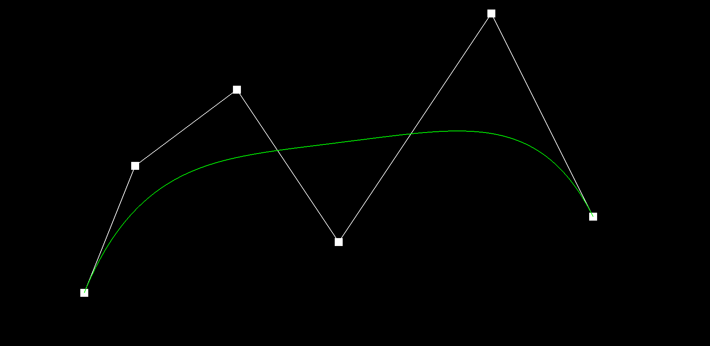
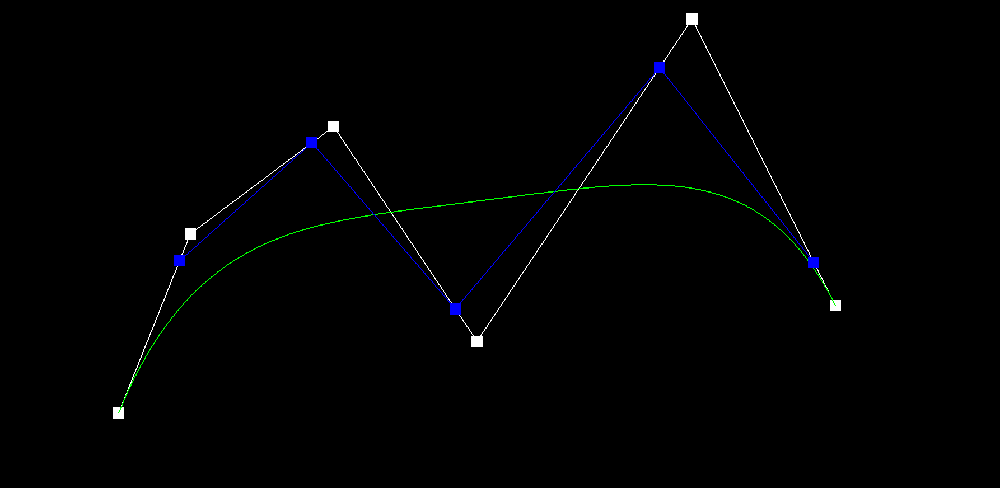
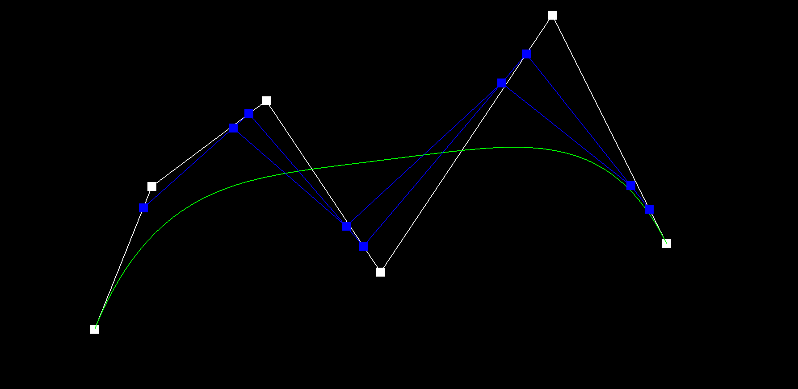
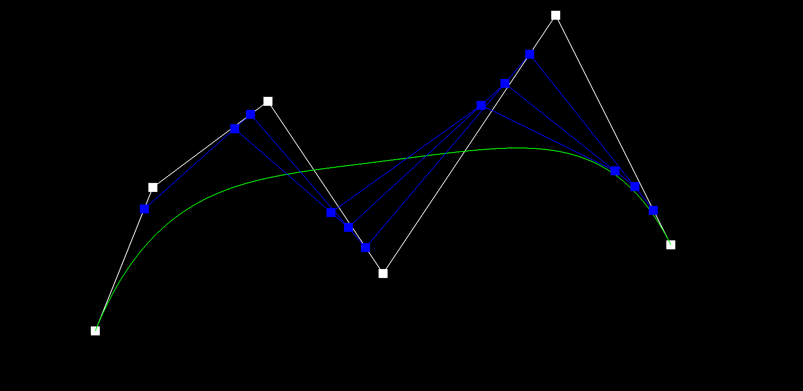
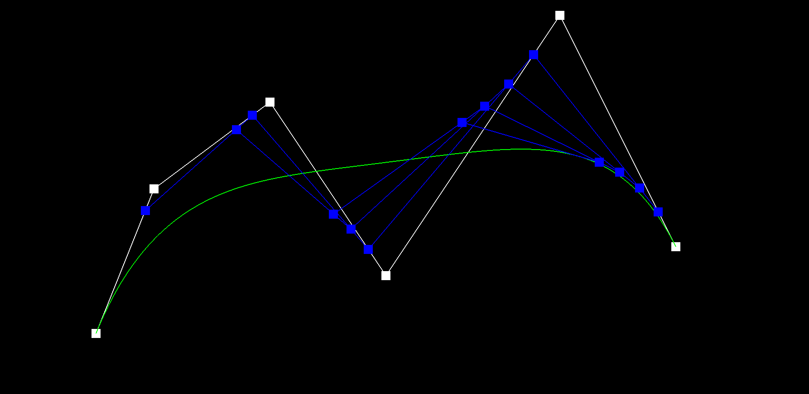
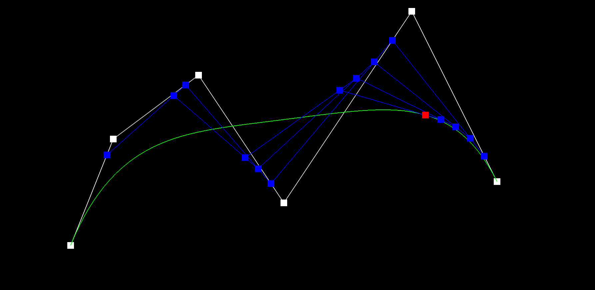
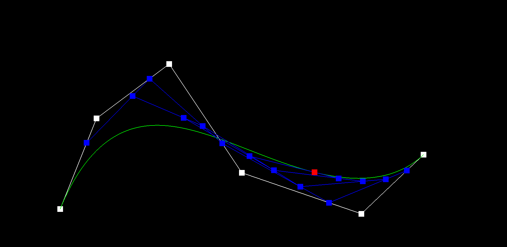
Part 2: Bezier surfaces with separable 1D de Casteljau
The de Casteljau algorithm extends to Bezier surfaces through separable 1D evaluation. Instead of a single parameter t over a curve, a surface point is defined by two parameters (u, v) over an n×n control point grid. Each row i of n control points defines its own Bezier curve. Running the full 1D de Casteljau algorithm on each row at parameter u collapses that row down to a single point P_i. After processing all n rows, you have n new points lying roughly along a column of the surface. Running de Casteljau on them at parameter v yields the final single point P(u, v), the point on the surface. Shown below is a screenshot of bez/teapot.bez evaluated by this implementation.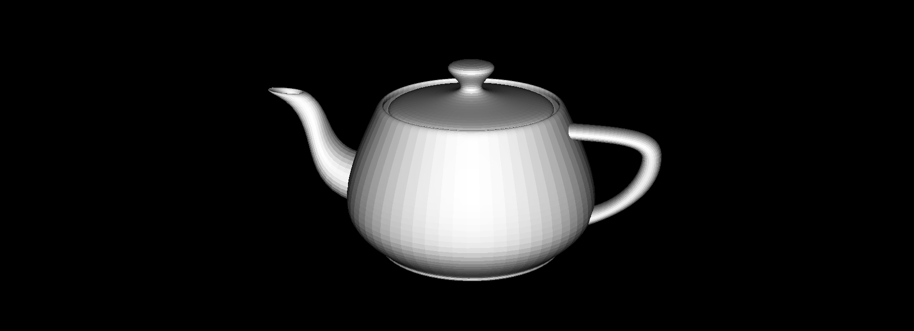
Section II: Triangle Meshes and Half-Edge Data Structure
Part 3: Area-weighted vertex normals
To compute the area-weighted vertex normal, I iterate over all faces incident to the vertex using the standard half-edge circulation: starting fromhalfedge(), repeatedly calling h->twin()->
next() to move to the next face around the vertex
until returning to the start. For each face, I retrieve the
three vertex positions A, B, C where A is the current vertex.
I then compute cross(B - A, C - A), which gives a vector
perpendicular to the face whose magnitude is proportional
to twice the triangle's area. So area-weighting comes for
free without computing any areas explicitly. Summing
these cross products across all incident faces and
calling .unit() on the result gives the
final area-weighted normal. Shown below is the a teapot
displayed with flat shading and with Phong shading using
area-weighted vertex normals.
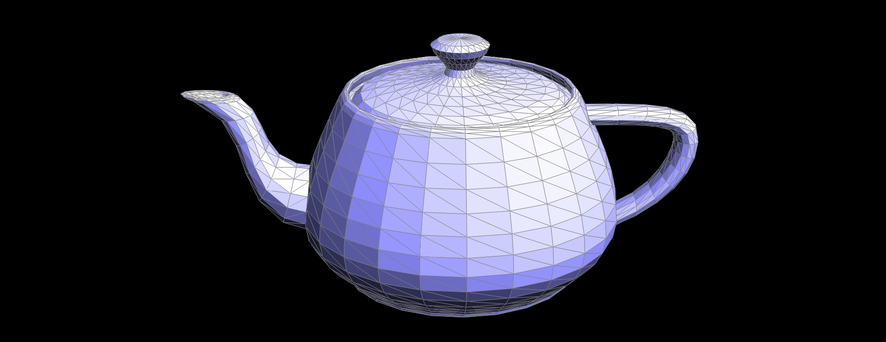
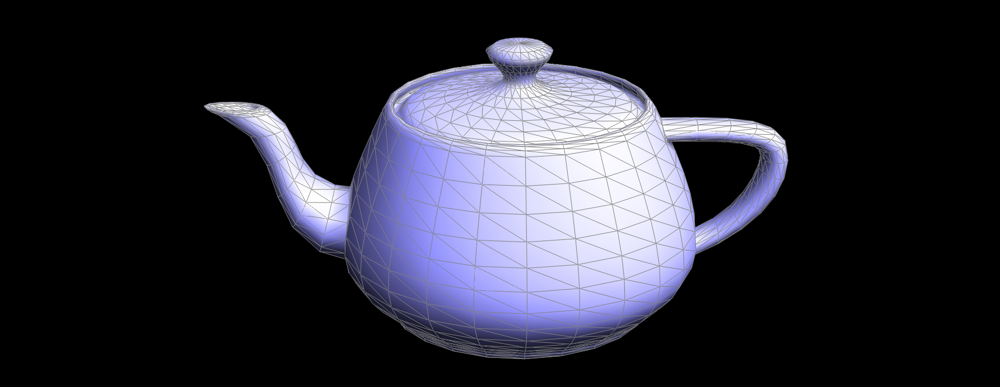
Part 4: Edge flip
I followed the recommended approach of drawing the before/after diagrams and exhaustively reassigning every pointer. Given the two input triangles (a,b,c) and (c,b,d) sharing edge b-c, I first collected all existing elements: 6 half-edges (h0-h5), 4 vertices (a,b,c,d), 5 edges, and 2 faces. After the flip, edge e0 connects a-d instead of b-c. I redistributed the existing half-edges into two new face cycles without creating or deleting any elements. Only h0 and h2 change their vertex pointer. I used setNeighbors to reassign all five pointers on every half-edge at once, even unchanged ones. The boundary check if(e0->isBoundary()) return e0 is handled
first before touching any pointers. Debugging the code involved the
manual tracking of which pointers were missing (i.e writing down
a diagram of the data structures). Shown below are images of the teapot
before and after the edge flip.
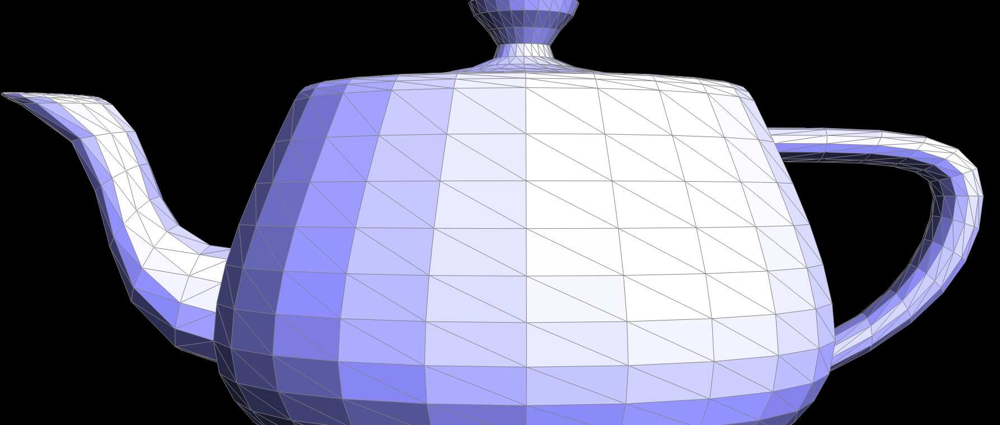
Part 5: Edge split
Edge split is more involved than edge flip because it creates new mesh elements. Starting
from two triangles sharing edge b-c, I created the following new elements:
- 1 new vertex
mat midpoint(b + c) / 2 - 3 new edges (
e5m-c,e6m-a,e7m-d) — reusinge0as b-m - 2 new faces (
f2,f3) — reusingf0andf1 - 6 new half-edges (
h6–h11) for the new connectivity
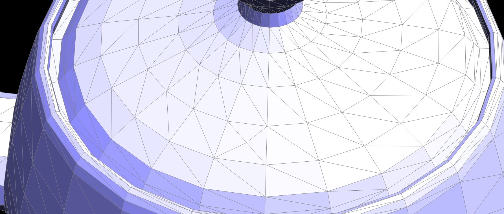
Part 6: Loop subdivision for mesh upsampling
I implemented loop subdivision in five sequential steps, deliberately computing all new positions on the original coarse mesh before any topology changes take place. This keeps neighbor lookups simple and prevents newly inserted vertices from polluting the weighted averages.
- Step 1 Old vertex positions: For each original vertex of degree
n, computeu = (n == 3) ? 3/16 : 3/(8n)and store(1 - n·u)·pos + u·neighborSuminv->newPosition. Mark every vertexisNew = false. - Step 2 New vertex positions: For each original edge, store the
midpoint weight
3/8·(A+B) + 1/8·(C+D)ine->newPosition. Mark every edgeisNew = false. - Step 3 Split: Collect all original edges into a
vector<EdgeIter>first, then split each one. Copye->newPositiononto the new vertexmand markm->isNew = true. - Step 4 Flip: Iterate all edges; flip any that are
isNew == trueand connect one old vertex to one new vertex (v0->isNew != v1->isNew). - Step 5 Copy: Write
v->newPositionintov->positionfor every vertex.
Loop subdivision smooths the mesh by pulling vertices toward a weighted average of their neighbors. This works on smooth regions but causes sharp corners and creases to visibly shrink and round off with each iteration, the corner vertices get averaged toward their neighbors and lose their original position. You can reduce this effect by pre-splitting edges near a sharp feature before subdividing.
Shown below is the cube with and without preprocessing using splits.
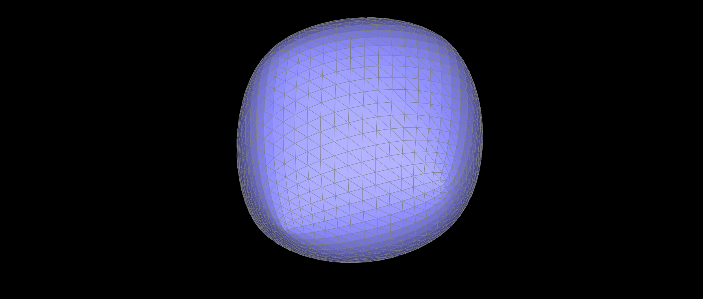
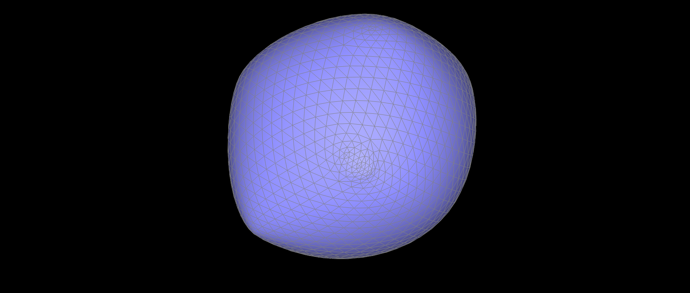